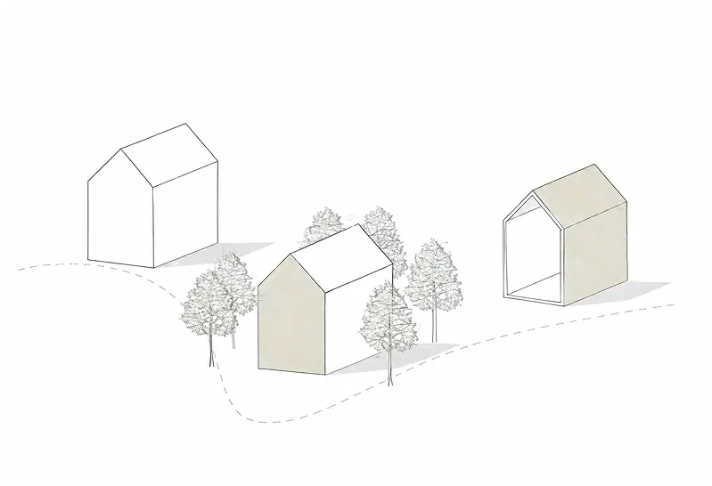

CONCEPT
Relationship Between Architecture and Nature
The project establishes a dialogue between architecture and the natural landscape through a simple spatial organization and carefully framed views toward the lake environment.
The interior spaces are designed to create a continuous connection with nature, allowing light, water and surrounding vegetation to become part of the living experience.
